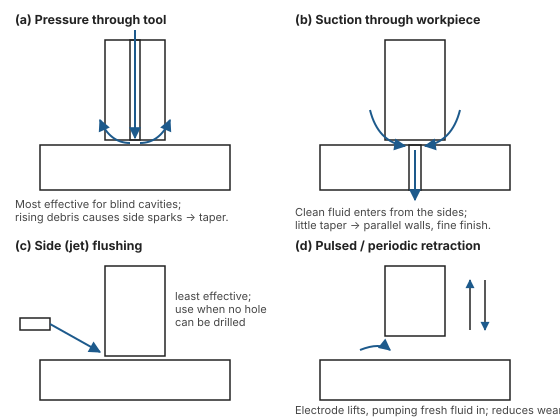

Unit 3 · Lesson 3 of 12 · ~20 min
The EDM machine: five subsystems, one job each
Generator, dielectric, electrode, servo and flushing. Each exists to keep sparks clean, separate and repeatable.
Name each EDM subsystem with its function, list the functions and requirements of a dielectric, choose an electrode material with reasons, and sketch two flushing methods.
1 · Power supply (pulse generator)
The generator turns mains AC into pulsed DC. It sets the gap voltage, peak current, pulse on-time, pulse off-time, frequency and polarity. It also senses the gap voltage and signals the servo. A cut-off circuit kills the power if an arc or short circuit forms (Jain, p.131–133).
Four gap states can occur in any pulse: normal discharge, arc, short circuit, open circuit. Only the first removes material usefully.
| Generator | How it works | Strength | Weakness |
|---|---|---|---|
| Rotary impulse | Motor-generator set gives sinusoidal pulses | Simple, historical | Uncontrolled waveform, frequent arcing, high tool wear |
| Relaxation (RC) | DC source charges a capacitor through a resistor; it discharges across the gap | Simple, cheap, fine finish possible | Low MRR (long charging time), very high peak current, high tool wear; current, duration and energy cannot be set independently |
| Transistorised pulse | Power transistors switch DC into square pulses | Independent control of ton, toff, current; high MRR; low tool wear | Costlier electronics |
Jain p.130–131; Jagadeesha §6.5. The RC circuit gets a full derivation in Lessons 4 and 5.
2 · Dielectric system
Dielectric fluid, reservoir, pump, filters and delivery nozzles.
Functions
- Insulate the gap until breakdown voltage is reached.
- Ionise quickly at breakdown, concentrating the spark into a narrow channel.
- Deionise the gap right after each spark.
- Cool and quench the tool, work and debris.
- Flush debris out of the gap.
Requirements
- High dielectric strength
- Short ignition delay; fast deionisation
- Low viscosity, good fluidity
- High flash point (no fire)
- Good cooling capacity
- Non-toxic, non-corrosive, cheap
Common dielectrics: kerosene and paraffin, transformer oil, EDM-grade hydrocarbon oils, and deionised (DI) water. DI water gives higher MRR and better cooling but higher electrode wear and a corrosion risk. It is standard in Wire EDM and small-hole drilling (Jain, p.134). Debris is filtered out down to about 2–5 µm before recirculation.
3 · Tool electrode
A good electrode material has high electrical and thermal conductivity, a high melting point, low wear, easy machinability and low cost. Copper and graphite dominate because they are easy to shape (Jain, p.136).
| Material | Why use it | Watch out |
|---|---|---|
| Graphite | Easy to machine, low wear, high MRR; vaporises (~3600 °C) instead of melting. Main choice with pulse generators | Brittle, abrasive dust; fine grades needed for detail |
| Copper (electrolytic) | Best surface finish; good conductor | Higher wear than graphite at high current |
| Copper–tungsten | Very low wear; small holes and slots, fine die contours | Expensive, hard to shape |
| Brass | Cheap; stable plasma | High wear (zinc); not for 3D cavities |
| Tungsten, silver–tungsten | Very low wear; fine holes, sharp corners | Costly |
Jain gives a range from 0.05:1 to 100:1 depending on materials, settings and operation (p.138). Wear is worst at corners and edges, where the field is strongest, so tools round off and holes taper.
Jagadeesha defines "volume wear" the other way round in one place (work ÷ tool). In an answer, write the formula you are using. Tutorial Q4 uses tool ÷ work, the same as Jain.
Overcut is the clearance between tool and machined hole on each side, roughly the spark gap. Design the tool undersize by the overcut. Electrode refeeding brings the tool back to a reference point after each hole, so length lost to wear does not make later holes shallower (Jain, p.139).
4 · Servo system
The servo holds the gap constant. The generator senses gap voltage and compares it with a reference:
- Gap too wide (voltage high, no sparks): advance the tool.
- Gap bridged by debris or short circuit (voltage collapses): retract until flushing clears it.
It needs sensitivity to tiny movements, enough force to move the ram, electrode and flushing loads, and no hunting or backlash. Electro-hydraulic servos respond in about 2 ms and are preferred to electromechanical ones (Jagadeesha, §6.4.5). Modern CNC-EDM adds adaptive control, orbiting, automatic tool changers and automatic electrode zeroing (Jain, p.139–140).
5 · Flushing
Debris left in the gap bridges it, causing arcs and short circuits, low MRR and poor finish. Good flushing can raise MRR by a factor of about 10 (Jain, p.135, citing Koshy et al.). Blind cavities are the hardest to flush.

| Method | Use it when | Side effect |
|---|---|---|
| Pressure (injection) through tool or work | Blind cavities; most effective | Debris rising past the tool sides causes side sparks, so walls taper. Through-tool flushing can leave a central spike. |
| Suction through tool or work | Fine finish and parallel walls needed | Must still let enough clean fluid into the gap |
| Side / jet | No hole can be drilled in tool or work | Least effective |
| Pulsed with electrode retraction | Deep cavities; limiting electrode wear | Some time lost to retraction |
Practise
5 marksWrite a note on the dielectric fluid used in EDM: its functions, requirements, and two common examples.
Functions: (1) insulates the gap until breakdown; (2) ionises to form and concentrate the spark channel; (3) deionises the gap after each discharge; (4) cools tool and work and quenches the debris; (5) flushes debris out of the gap.
Requirements: high dielectric strength; short ignition delay and rapid deionisation; low viscosity; high flash point; good cooling; chemically inert and non-corrosive; non-toxic; cheap and available.
Examples: kerosene or paraffin and EDM hydrocarbon oils for die-sinking; deionised water for Wire EDM and small holes (higher MRR and cooling, but more electrode wear and corrosion risk). The fluid is filtered to ~2–5 µm and recirculated.
Tutorial 5–6, Q6. Discharge current 10 A, voltage 200 V, duty cycle 0.1. Find the average input power.
The 2000 W is only delivered during ton; averaged over the cycle it is 200 W.
Tutorial 5–6, Q4. Machined volume 1000 mm³, electrode wear ratio 0.3 (tool volume = 0.3 × machined volume), copper electrode with density 8.96 g/cm³. Find the mass of electrode consumed.
Unit trap: 1 cm³ = 1000 mm³.
Quick check
1. Which is NOT a function of the dielectric?
- Deionising the gap after sparks
- Flushing debris from the gap
- Concentrating spark energy into channels
- Conducting current between sparks continuously
A dielectric must insulate between sparks. If it conducted continuously you would get an arc, not a train of sparks.
2. Main drawback of the RC relaxation generator?
- Cannot machine any hardened steel parts
- Low MRR from long charging time
- Needs deionised water as the dielectric
- Produces only very large deep craters
Most of each cycle is spent charging the capacitor, so sparking time is a small fraction. Peak currents are also very high, raising tool wear.
3. Which flushing method gives the most parallel walls?
- Side jet flushing
- Pressure through tool
- Suction through workpiece
- Pressure through workpiece
Suction draws clean fluid in from the sides and pulls debris away, so there is little side sparking and little taper.
4. Why do EDM electrodes wear most at corners?
- Electric field is strongest there
- Corners receive less flushing fluid
- Corners use a softer material
- Servo pushes harder on edges
Field concentrates at sharp edges and corners, so more sparks occur there. Corners round off and holes taper.